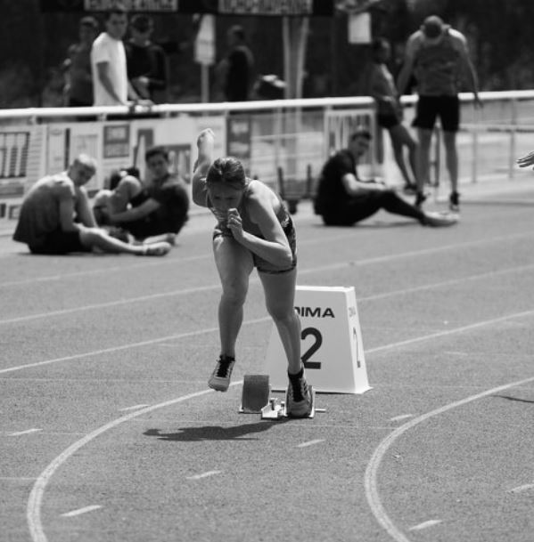

Hello, I am Pauline
I am passionate with sports and adventures. Doing athletic and horse ridding since more than 10 years. I love taking a fly and discovering countries and landscapes. I have recently discovered an interest for drawing, it relaxes me.
Relaxing musicHere is a very relaxing music that I like listening before I fall asleep.
Sports
I am passionate with horse riding and athletic and especially heptatlon.
Traveling and Adventures
I am passionate about traveling. I always want to go outside and try new things. Actually, I just come back form Madere a little portuguese island, it was just amazing to discover !
Drawing
I have dicovered that I really like drawing. I am not a professional, but I improve myself everyday. It likes a little refuge, with music in my ears it's perfect.